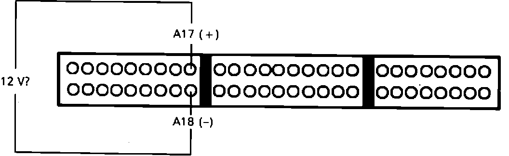
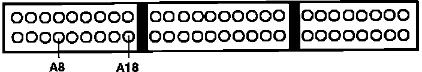

Torque Converter Clutch Solenoid: Testing and Inspection
Code 19 indicates a malfunction in the lock-up control solenoid circuit.1. With ignition off, remove HAZARD fuse from the positive battery cable end for 10 seconds to reset ECU.
2. Drive vehicle and observe check engine light.
Light on, proceed to step 4.
Light off, proceed to next step.
3. Malfunction is intermittent, check connections at lock-up solenoid and ECU. End of test.
4. Turn ignition off.
Lock Up Control Solenoid Testing:

5. Install test harness between ECU and connector. If test harness is not available, carefully backprobe wires at ECU connector.
6. Disconnect connector A from ECU only.
7. With ignition on, measure voltage between harness terminals A17 and A18
Battery voltage, proceed to step 9.
No battery voltage, proceed to next step.
8. Check #4 fuse in underdash fuse box. If fuse is OK, check for open BLK/YEL wire between fuse box and ECU terminal A17. End of test.
9. Turn ignition off and disconnect lock-up solenoid connector at transaxle.
Lock Up Control Solenoid Testing:

10. Check ECU harness pin A8 for continuity to ground.
Continuity, proceed to next step.
No continuity, proceed to step 12.
Lock-Up Control Solenoid:

11. Repair short to ground in YEL wire between ECU terminal A8 and lock-up solenoid connector. End of test.
12. Reconnect lock-up solenoid.
13. Check resistance across ECU harness terminals A8 and A18.
14 - 25 ohms, proceed to next step.
Not 14 - 25 ohms, proceed to step 15.
14. Replace electronic control unit. End of test.
15. Check continuity between ECU harness terminal A8 and YEL wire at lock-up solenoid connector.
Continuity, replace lock-up solenoid. End of test.
No continuity, proceed to next step.
16. Repair open YEL wire between ECU harness pin A8 and lock-up solenoid.